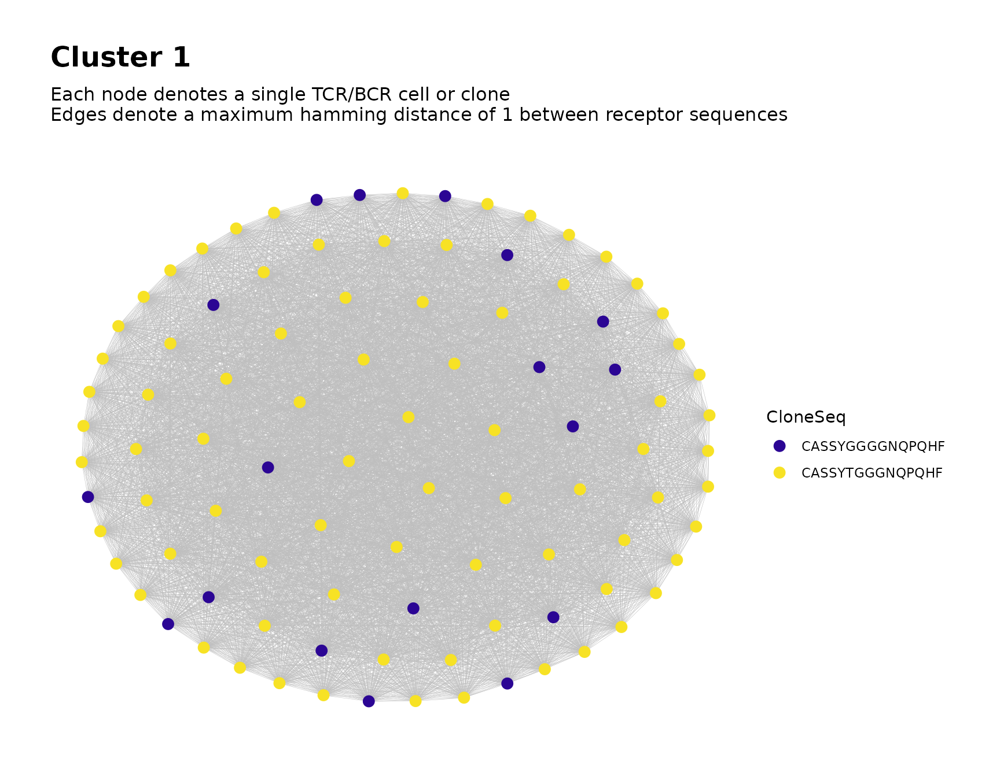
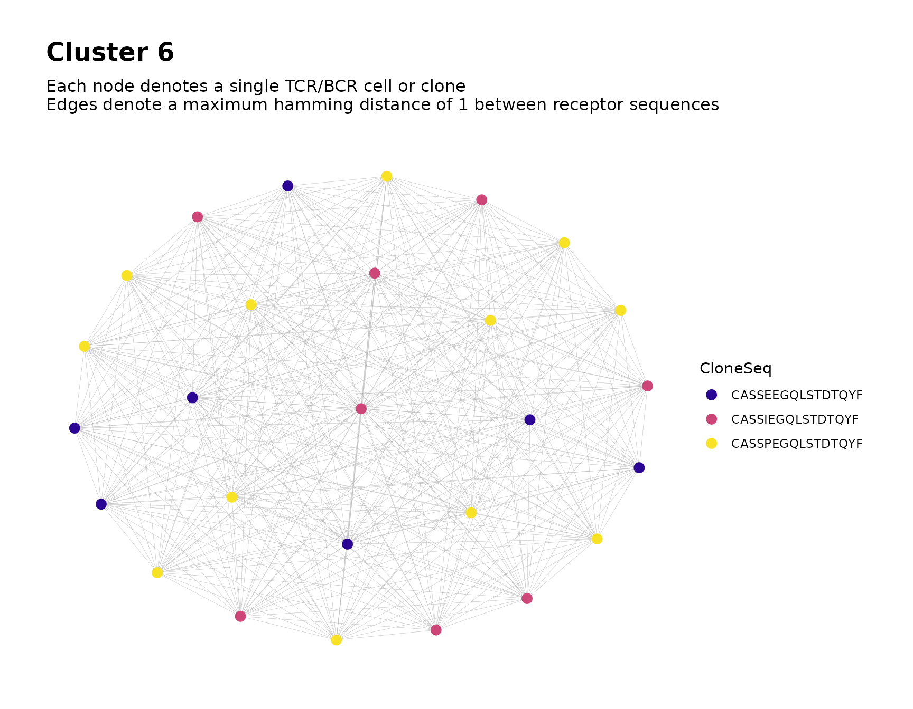

Introduction
The NAIR package includes a set of functions that
facilitate searching for public TCR/BCR clusters across multiple samples
of Adaptive Immune Receptor Repertoire Sequencing (AIRR-Seq) data.
In this context, a public cluster consists of similar TCR/BCR clones (e.g., those whose CDR3 amino acid sequences differ by at most one amino acid) that are shared across samples (e.g., across individuals or across time points for a single individual).
We first provide a brief conceptual overview, followed by a demonstration in which we explain the process in greater detail.
Overview of Process
- Filter the clusters within each sample’s network. For each sample, construct the repertoire network and use cluster analysis to partition the network into clusters. Filter the data, keeping only those clusters with sufficient node count or clone count.
- Construct global network from the filtered data and perform clustering. Combine the filtered data from all samples into a single global network. Perform cluster analysis and assign membership to the global clusters. These clusters are considered as the public clusters.
- Perform additional tasks such as labeling the clusters in the global network plot and analyzing particular clusters of interest.
Simulate Data for Demonstration
We simulate some toy data for demonstration.
We simulate a total of 30 samples, each containing 30 observations.
Some sequences are simulated with a tendency to appear in relatively few samples, while others are simulated with a tendency to appear in many samples.
library(NAIR)
#> Welcome to the NAIR package. Get started using `vignette("NAIR", package = "NAIR")` or by visiting https://mlizhangx.github.io/Network-Analysis-for-Repertoire-Sequencing-/
data_dir <- tempdir()
dir_input_samples <- file.path(data_dir, "input_samples")
dir.create(dir_input_samples, showWarnings = FALSE)
samples <- 30
sample_size <- 30 # (seqs per sample)
base_seqs <- c(
"CASSIEGQLSTDTQYF", "CASSEEGQLSTDTQYF", "CASSSVETQYF",
"CASSPEGQLSTDTQYF", "RASSLAGNTEAFF", "CASSHRGTDTQYF", "CASDAGVFQPQHF",
"CASSLTSGYNEQFF", "CASSETGYNEQFF", "CASSLTGGNEQFF", "CASSYLTGYNEQFF",
"CASSLTGNEQFF", "CASSLNGYNEQFF", "CASSFPWDGYGYTF", "CASTLARQGGELFF",
"CASTLSRQGGELFF", "CSVELLPTGPLETSYNEQFF", "CSVELLPTGPSETSYNEQFF",
"CVELLPTGPSETSYNEQFF", "CASLAGGRTQETQYF", "CASRLAGGRTQETQYF",
"CASSLAGGRTETQYF", "CASSLAGGRTQETQYF", "CASSRLAGGRTQETQYF",
"CASQYGGGNQPQHF", "CASSLGGGNQPQHF", "CASSNGGGNQPQHF", "CASSYGGGGNQPQHF",
"CASSYGGGQPQHF", "CASSYKGGNQPQHF", "CASSYTGGGNQPQHF",
"CAWSSQETQYF", "CASSSPETQYF", "CASSGAYEQYF", "CSVDLGKGNNEQFF")
# relative generation probabilities
pgen <- cbind(
stats::toeplitz(0.6^(0:(sample_size - 1))),
matrix(1, nrow = samples, ncol = length(base_seqs) - samples))
simulateToyData(
samples = samples,
sample_size = sample_size,
prefix_length = 1,
prefix_chars = c("", ""),
prefix_probs = cbind(rep(1, samples), rep(0, samples)),
affixes = base_seqs,
affix_probs = pgen,
num_edits = 0,
output_dir = dir_input_samples,
no_return = TRUE
)
#> [1] TRUEEach sample is saved in a separate file using the .rds file format.
The files are named “Sample1.rds”,
“Sample2.rds”, etc. The file path of their directory is
saved to the R environment variable dir_input_samples for
later reference.
The first few rows of the data for the first sample appear as follows:
# View first few rows of data for sample 1
head(readRDS(file.path(dir_input_samples, "Sample1.rds")))
#> CloneSeq CloneFrequency CloneCount SampleID
#> 1 CASSIEGQLSTDTQYF 0.02606559 2832 Sample1
#> 2 CASSEEGQLSTDTQYF 0.03718396 4040 Sample1
#> 3 CASSSPETQYF 0.03182726 3458 Sample1
#> 4 CASSIEGQLSTDTQYF 0.04615781 5015 Sample1
#> 5 CAWSSQETQYF 0.06006498 6526 Sample1
#> 6 CASSEEGQLSTDTQYF 0.03363123 3654 Sample1Step 1: Filter Clusters Within Each Sample
First, we use findPublicClusters() to perform network
analysis on each sample individually and select clusters based on node
count and clone count.
For each sample, the repertoire network is constructed and cluster analysis is used to partition the network into clusters. The clusters are then filtered according to node count and clone count based on user-specified criteria. The data for the clusters that remain after filtering are saved as files to be used as inputs for step 2.
Below, we explain the function’s usage.
Filter Settings
findPublicClusters() has several parameters that control
the criteria used to filter the nodes and clusters in each sample. These
arguments are presented below.
Top \(n\) Clusters
Within each sample, the clusters are ranked by node count. The top
\(n\) highest-ranking clusters (those
with the greatest node count) within each sample are automatically
retained. The default value of \(n\) is
20. A different value of \(n\) can be
specified using the top_n_clusters argument.
If more than one cluster is tied for \(n\)-th place in the ranking by node count, only one such cluster will be included in the top \(n\) clusters. This ensures that no more than \(n\) clusters are selected from each sample based on this criterion.
If fewer than \(n\) clusters are present in the network for a sample, then all of the clusters will be retained.
Minimum Node Count
In addition to retaining the top \(n\) clusters from each sample, clusters
that contain a sufficient number of nodes will also be retained. By
default, any cluster containing at least ten nodes will be retained.
This value can be adjusted using the min_node_count
argument. For example, setting min_clone_count = 30 will
retain all clusters containing at least 30 nodes.
Minimum Clone Count
In addition to the clusters retained based on node count, clusters with a sufficient aggregate clone count will also be retained. The aggregate clone count of a cluster is the sum of the clone counts across all nodes (clones) in the cluster.
By default, any cluster with an aggregate clone count of at least 100
will be retained. This value can be adjusted using the
min_clone_count argument. For example, setting
min_clone_count = 500 will retain all clusters with an
aggregate clone count of at least 500.
Note that clusters are only selected according to this criterion if
clone counts are provided. This is done using the count_col
argument as explained in the Specifying the Count
Column subsection.
Sequence Length
When building the network for each sample, only clones whose receptor
sequences are at least three characters in length will be included in
the network. This minimum value for sequence length can be adjusted by
setting the min_seq_length argument to a different value.
Setting the value to NULL bypasses this check.
Sequence Content
When building the network for each sample, all clones whose receptor
sequences contain any of the characters *, |
or _ will be omitted from the network. This can be changed
using the drop_matches argument, which accepts a character
string containing a regular expression that specifies the pattern of
content to search for (see ?regex). The content of each
clone’s sequence is checked for a match to this pattern using
grep(). If a match is found, the clone is omitted from the
network. Setting the value to NULL bypasses this check.
Specify Input Data for Step 1
File Paths of Sample Data
The main argument of findPublicClusters() is the
file_list argument, which accepts a vector containing file
paths. Each file is assumed to contain the AIRR-Seq data for a single
sample, with observations indexed by row.
Below, we prepare the vector input_files to be provided
to the file_list argument of
findPublicClusters():
# input files for step 1 (one per sample)
input_files <-
file.path(dir_input_samples,
paste0("Sample", 1:samples, ".rds")
)
head(input_files)
#> [1] "/tmp/Rtmp9ZTzYj/input_samples/Sample1.rds"
#> [2] "/tmp/Rtmp9ZTzYj/input_samples/Sample2.rds"
#> [3] "/tmp/Rtmp9ZTzYj/input_samples/Sample3.rds"
#> [4] "/tmp/Rtmp9ZTzYj/input_samples/Sample4.rds"
#> [5] "/tmp/Rtmp9ZTzYj/input_samples/Sample5.rds"
#> [6] "/tmp/Rtmp9ZTzYj/input_samples/Sample6.rds"File Format of Sample Data
The file format of the input files for
findPublicClusters() is specified using the
input_type parameter. The supported formats include
"rds", "rda", "csv", as well as
files that can be read using read.table(), such as
"tsv" and "txt".
Our samples are stored in .rds files, so we use
input_type = "rds".
For text formats such as "csv", "tsv" and
"txt", users can specify the separation option by utilizing
the sep argument. The default setting sep = ""
accommodates all forms of white space, i.e., one or more spaces, tabs,
newlines or carriage returns. In addition, it is important to note that
the first line of the data is assumed to be the header by default. To
disable this behavior and treat the first line as data, users must set
the header parameter to FALSE.
For the "rda" (Rdata) format, the
data_symbols argument is used to specify the name of each
sample’s AIRR-Seq data frame within the Rdata file (i.e., the name of
the data frame as it will appear in the R environment when the Rdata
file is loaded). The argument accepts a character string. This requires
that each sample’s data frame has the same name within its respective
Rdata file. For example, if each sample’s data frame is named
mydataframe and saved using the command
save(mydataframe, file = myfilepath), where the file path
myfilepath is different for each sample, then we would set
data_symbols = "mydataframe".
Sequence Column in Sample Data
Each clone’s TCR/BCR sequence is used as the basis of similarity between clones in the network.
The seq_col argument is used to specify the column
containing the clone sequences in the data frame for each sample. The
argument accepts a character string containing the column name.
In our simulated data, the column containing the clone sequences is
named CloneSeq. Hence we specify
seq_col = "CloneSeq" when calling
findPublicClusters().
Count Column in Sample Data
The clone count for each clone is used to filter the clusters within each sample.
The count_col argument is used to specify the column
containing the clone counts in the data frame for each sample. The
argument accepts a character string containing the column name.
In our simulated data, the column containing the clone sequences is
named CloneCount. Hence we specify
count_col = "CloneCount" when calling
findPublicClusters().
Custom Sample IDs (Optional)
The sample ID for each clone will be included in the filtered data
saved by findPublicClusters(). This will allow us to
distinguish the sample of origin for each clone after we combine the
filtered data from all samples in step 2.
By default, the samples are labeled as "Sample1",
"Sample2", etc., according to their order of appearance in
file_list. The sample_ids argument allows for
custom sample IDs to be assigned, if desired. The argument accepts a
vector of the same length as file_list. Each entry of
sample_ids is assigned as a sample ID to the sample in the
corresponding entry of file_list.
Sample ID values should avoid using characters that are
invalid for use in file names, as well as forward slash and backslash
(/ and \).
Network Settings for Sample Networks
The settings used to construct the network for each sample can be customized using the arguments below.
Distance Function
The default method for measuring the similarity between TCR/BCR
sequences is the Hamming distance, which is computed using
hamDistBounded(). It calculates the number of differences
between two sequences of the same length. If the sequences have
different lengths, the shorter sequence is extended by adding
non-matching characters to make it the same length as the longer
sequence.
The Levenshtein distance, which is computed using
levDistBounded(), can be used as an alternative measurement
to determine the similarity between sequences. It calculates the minimum
number of single-character edits (insertions, deletions and
transformations) needed to transform one sequence into the other. This
method is particularly useful for comparing sequences of different
lengths and can account for insertions and deletions. When constructing
a network based on the similarity of CDR-3 nucleotide sequences, it is
preferable to use the Levenshtein distance instead of the default
Hamming distance by setting the argument
dist_type = "levenshtein". However, the Levenshtein
distance requires significantly more computational time than the Hamming
distance, which may be challenging when working with large data sets
having long TCR/BCR sequences.
Distance Cutoff
The distance function specified in the dist_type
argument (Hamming distance by default) is used to quantify the
similarity between TCR/BCR sequences. The chosen distance measurement
determines the distance between two nodes in the network graph.
By default, two nodes in the graph are connected by an edge if their
distance is at most 1. However, if users want to adjust this cutoff, the
dist_cutoff argument can be set to a different value.
For example, if dist_cutoff = 2, then two nodes will be
connected by an edge if their distance is at most 2. The cutoff value
controls the stringency of the network construction and affects the
number and density of edges in the network.
Keep/Remove Isolated Nodes
By default, if a given node has no edges connecting it to any other nodes in the network, it will be removed from the network graph and will not be included in the output.
If desired, all nodes can be kept in the network, including those
that do not have any edge connections to other nodes. This is
accomplished by setting the drop_isolated_nodes argument to
FALSE.
Clustering Algorithm for Sample Networks
By default, clustering within each sample’s network is performed
using the cluster_fast_greedy() algorithm from the
igraph package. A different clustering algorithm can be
specified using the cluster_fun argument. See this section of the
buildRepSeqNetwork vignette for details.
Output Settings for Step 1
findPublicClusters() does not return any direct output.
Instead, it saves data for the selected clusters to files that will be
used as inputs in step 2. For each sample,
findPublicClusters() saves two files, one containing node-specific metadata and the other
containing cluster-specific
metadata. The data for each sample is saved after filtering the
clusters, and thus includes data only for those clusters that are
selected based on the specified filter settings.
Variables to Keep From Step 1
By default, the node-specific metadata for each sample includes all of the variables (data columns) from the sample’s original input data frame.
In some cases, the user may not wish for all of the original
variables to be included. In this case, the user can specify the
original data columns they wish to keep. This is done using the
subset_cols argument, which accepts a vector containing
either the column names or the column indices of the columns to be
kept.
Regardless of the value of subset_cols, the variable for
clone sequence (as specified by the seq_col argument) will
always be included, as will the variable SampleID. Also
included will be additional variables for
node-level network properties within the sample network.
Any variables included in the output can be used as metadata to color the nodes in graph plots of the global network during step 2.
Output Directory for Step 1
By default, a new directory named public_clusters is
created within the current working directory, to be used as an output
directory for saving the function’s output. A different output directory
can be specified by providing a file path to the output_dir
argument. The specified directory will be created if it does not already
exist.
Within the output directory, two subdirectories are created. One
subdirectory, named node_meta_data, contains the node-level
data files for each sample, and the other, named
cluster_meta_data, contains the cluster-level data files.
Within each of these two subdirectories, the file for each sample is
named according to its sample ID.
Output File Format for Step 1
By default, each file is saved as a RDS file. This can be changed
using the output_type argument. Other valid options include
"rda" and "csv".
Note regarding the Rdata format: For the
"rda" (Rdata) format, each data frame containing node-level
data will be named ndat in the R environment when its Rdata
file is loaded, while each data frame containing cluster-level data will
be named cdat.
(Optional) Saving Data for Unfiltered Sample Networks
By default, findPublicClusters() saves data only for the
clusters that are selected based on the specified filter settings.
If desired, data for each sample’s full network can also be saved
prior to filtering the clusters. This is done by by providing a file
path to the output_dir_unfiltered argument, which specifies
a separate output directory for the full network data. Each sample’s
full network data prior to filtering the clusters will then be saved to
the directory specified by the output_dir_unfiltered
argument. This data is saved separately from, and in addition to, the
default data that is saved after filtering the clusters.
Note that the sequence-based filter settings specified by
min_seq_length and drop_chars still apply to
each sample’s full network, since the network is only constructed after
applying these filters. The full, pre-filtered network refers to the
network that contains all of the sample’s clusters, i.e., before the
public clusters are identified and other clusters are removed.
The full network data for each sample includes all of the objects contained
in the output of buildRepSeqNetwork, including cluster
metadata. By default, these are placed in a list named net
and saved to an RDS file whose file name is the sample ID. The RDA format can be used instead of
RDS by setting output_type_unfiltered = "rda".
Alternatively, setting
output_type_unfiltered = "individual" saves each R object
using the default file
formats from buildRepSeqNetwork, where each file’s name
begins with the sample ID.
(Optional) Visualization of Sample Networks
By default, findPublicClusters() does not produce visual
plots when constructing the network for each sample. Instead,
visualization occurs after combining the data from all samples into a
single network in step 2.
If desired, visual plots of the full network for each sample (prior
to filtering the clusters) can be enabled by setting
plots = TRUE. This does nothing on its own: by default,
these plots are neither printed nor saved. To print the plots in the R
plotting window, the user must additionally set
print_plots = TRUE. To save the plots, the user must specify a directory to the
output_type_unfiltered argument.
By default, the plot for each sample will color the nodes according
to the cluster to which they belong. The user can specify a different
variable for coloring the nodes using the color_nodes_by
argument as detailed
here. It is even possible to generate multiple plots of each
sample’s network, with each plot colored according to a different
variable.
If the user provides a directory to the
output_type_unfiltered argument, a pdf file will be
saved for each sample, containing all plots generated for the sample’s
network. Each pdf file’s name will be the sample
ID.
This vignette details additional arguments that can be used to further customize the visual plot for each sample.
Demonstration (Step 1)
Execute findPublicClusters()
We execute findPublicClusters() using the input we prepared earlier for the
file_list argument.
The file path of our output directory is saved to the R variable
named dir_filtered_samples for later reference.
# directory to save filtered sample data
dir_filtered_samples <- file.path(data_dir, "filtered_samples")
# Filter Clusters Within Each Sample
findPublicClusters(file_list = input_files,
input_type = "rds",
seq_col = "CloneSeq",
count_col = "CloneCount",
min_seq_length = NULL,
drop_matches = NULL,
top_n_clusters = 3,
min_node_count = 5,
min_clone_count = 15000,
output_dir = dir_filtered_samples
)
#> <<< Beginning search for public clusters >>>
#> Processing sample 1 of 30: Sample1
#> Input data contains 30 rows.
#> Computing network edges based on a max hamming distance of 1... Done.
#> Network contains 30 nodes (after removing isolated nodes).
#> Computing cluster membership within the network... Done.
#> Computing node-level network statistics... Done.
#> Computing statistics for the 7 clusters in the network... Done.
#> >>> Filtering clusters in the current sample... Done.
#>
#> * 3 clusters (18 nodes) remain. Saving results... Done.
#> ----------------------------------------------------------------------
#> Processing sample 2 of 30: Sample2
#> Input data contains 30 rows.
#> Computing network edges based on a max hamming distance of 1... Done.
#> Network contains 28 nodes (after removing isolated nodes).
#> Computing cluster membership within the network... Done.
#> Computing node-level network statistics... Done.
#> Computing statistics for the 6 clusters in the network... Done.
#> >>> Filtering clusters in the current sample... Done.
#>
#> * 4 clusters (22 nodes) remain. Saving results... Done.
#> ----------------------------------------------------------------------
#> Processing sample 3 of 30: Sample3
#> Input data contains 30 rows.
#> Computing network edges based on a max hamming distance of 1... Done.
#> Network contains 29 nodes (after removing isolated nodes).
#> Computing cluster membership within the network... Done.
#> Computing node-level network statistics... Done.
#> Computing statistics for the 6 clusters in the network... Done.
#> >>> Filtering clusters in the current sample... Done.
#>
#> * 3 clusters (20 nodes) remain. Saving results... Done.
#> ----------------------------------------------------------------------
#> Processing sample 4 of 30: Sample4
#> Input data contains 30 rows.
#> Computing network edges based on a max hamming distance of 1... Done.
#> Network contains 28 nodes (after removing isolated nodes).
#> Computing cluster membership within the network... Done.
#> Computing node-level network statistics... Done.
#> Computing statistics for the 6 clusters in the network... Done.
#> >>> Filtering clusters in the current sample... Done.
#>
#> * 3 clusters (18 nodes) remain. Saving results... Done.
#> ----------------------------------------------------------------------
#> Processing sample 5 of 30: Sample5
#> Input data contains 30 rows.
#> Computing network edges based on a max hamming distance of 1... Done.
#> Network contains 27 nodes (after removing isolated nodes).
#> Computing cluster membership within the network... Done.
#> Computing node-level network statistics... Done.
#> Computing statistics for the 6 clusters in the network... Done.
#> >>> Filtering clusters in the current sample... Done.
#>
#> * 4 clusters (22 nodes) remain. Saving results... Done.
#> ----------------------------------------------------------------------
#> Processing sample 6 of 30: Sample6
#> Input data contains 30 rows.
#> Computing network edges based on a max hamming distance of 1... Done.
#> Network contains 29 nodes (after removing isolated nodes).
#> Computing cluster membership within the network... Done.
#> Computing node-level network statistics... Done.
#> Computing statistics for the 9 clusters in the network... Done.
#> >>> Filtering clusters in the current sample... Done.
#>
#> * 3 clusters (15 nodes) remain. Saving results... Done.
#> ----------------------------------------------------------------------
#> Processing sample 7 of 30: Sample7
#> Input data contains 30 rows.
#> Computing network edges based on a max hamming distance of 1... Done.
#> Network contains 26 nodes (after removing isolated nodes).
#> Computing cluster membership within the network... Done.
#> Computing node-level network statistics... Done.
#> Computing statistics for the 8 clusters in the network... Done.
#> >>> Filtering clusters in the current sample... Done.
#>
#> * 3 clusters (13 nodes) remain. Saving results... Done.
#> ----------------------------------------------------------------------
#> Processing sample 8 of 30: Sample8
#> Input data contains 30 rows.
#> Computing network edges based on a max hamming distance of 1... Done.
#> Network contains 26 nodes (after removing isolated nodes).
#> Computing cluster membership within the network... Done.
#> Computing node-level network statistics... Done.
#> Computing statistics for the 9 clusters in the network... Done.
#> >>> Filtering clusters in the current sample... Done.
#>
#> * 3 clusters (12 nodes) remain. Saving results... Done.
#> ----------------------------------------------------------------------
#> Processing sample 9 of 30: Sample9
#> Input data contains 30 rows.
#> Computing network edges based on a max hamming distance of 1... Done.
#> Network contains 26 nodes (after removing isolated nodes).
#> Computing cluster membership within the network... Done.
#> Computing node-level network statistics... Done.
#> Computing statistics for the 8 clusters in the network... Done.
#> >>> Filtering clusters in the current sample... Done.
#>
#> * 3 clusters (13 nodes) remain. Saving results... Done.
#> ----------------------------------------------------------------------
#> Processing sample 10 of 30: Sample10
#> Input data contains 30 rows.
#> Computing network edges based on a max hamming distance of 1... Done.
#> Network contains 28 nodes (after removing isolated nodes).
#> Computing cluster membership within the network... Done.
#> Computing node-level network statistics... Done.
#> Computing statistics for the 9 clusters in the network... Done.
#> >>> Filtering clusters in the current sample... Done.
#>
#> * 3 clusters (15 nodes) remain. Saving results... Done.
#> ----------------------------------------------------------------------
#> Processing sample 11 of 30: Sample11
#> Input data contains 30 rows.
#> Computing network edges based on a max hamming distance of 1... Done.
#> Network contains 26 nodes (after removing isolated nodes).
#> Computing cluster membership within the network... Done.
#> Computing node-level network statistics... Done.
#> Computing statistics for the 8 clusters in the network... Done.
#> >>> Filtering clusters in the current sample... Done.
#>
#> * 4 clusters (18 nodes) remain. Saving results... Done.
#> ----------------------------------------------------------------------
#> Processing sample 12 of 30: Sample12
#> Input data contains 30 rows.
#> Computing network edges based on a max hamming distance of 1... Done.
#> Network contains 29 nodes (after removing isolated nodes).
#> Computing cluster membership within the network... Done.
#> Computing node-level network statistics... Done.
#> Computing statistics for the 10 clusters in the network... Done.
#> >>> Filtering clusters in the current sample... Done.
#>
#> * 3 clusters (12 nodes) remain. Saving results... Done.
#> ----------------------------------------------------------------------
#> Processing sample 13 of 30: Sample13
#> Input data contains 30 rows.
#> Computing network edges based on a max hamming distance of 1... Done.
#> Network contains 27 nodes (after removing isolated nodes).
#> Computing cluster membership within the network... Done.
#> Computing node-level network statistics... Done.
#> Computing statistics for the 8 clusters in the network... Done.
#> >>> Filtering clusters in the current sample... Done.
#>
#> * 4 clusters (18 nodes) remain. Saving results... Done.
#> ----------------------------------------------------------------------
#> Processing sample 14 of 30: Sample14
#> Input data contains 30 rows.
#> Computing network edges based on a max hamming distance of 1... Done.
#> Network contains 26 nodes (after removing isolated nodes).
#> Computing cluster membership within the network... Done.
#> Computing node-level network statistics... Done.
#> Computing statistics for the 7 clusters in the network... Done.
#> >>> Filtering clusters in the current sample... Done.
#>
#> * 3 clusters (17 nodes) remain. Saving results... Done.
#> ----------------------------------------------------------------------
#> Processing sample 15 of 30: Sample15
#> Input data contains 30 rows.
#> Computing network edges based on a max hamming distance of 1... Done.
#> Network contains 29 nodes (after removing isolated nodes).
#> Computing cluster membership within the network... Done.
#> Computing node-level network statistics... Done.
#> Computing statistics for the 8 clusters in the network... Done.
#> >>> Filtering clusters in the current sample... Done.
#>
#> * 3 clusters (14 nodes) remain. Saving results... Done.
#> ----------------------------------------------------------------------
#> Processing sample 16 of 30: Sample16
#> Input data contains 30 rows.
#> Computing network edges based on a max hamming distance of 1... Done.
#> Network contains 26 nodes (after removing isolated nodes).
#> Computing cluster membership within the network... Done.
#> Computing node-level network statistics... Done.
#> Computing statistics for the 6 clusters in the network... Done.
#> >>> Filtering clusters in the current sample... Done.
#>
#> * 4 clusters (21 nodes) remain. Saving results... Done.
#> ----------------------------------------------------------------------
#> Processing sample 17 of 30: Sample17
#> Input data contains 30 rows.
#> Computing network edges based on a max hamming distance of 1... Done.
#> Network contains 29 nodes (after removing isolated nodes).
#> Computing cluster membership within the network... Done.
#> Computing node-level network statistics... Done.
#> Computing statistics for the 7 clusters in the network... Done.
#> >>> Filtering clusters in the current sample... Done.
#>
#> * 4 clusters (22 nodes) remain. Saving results... Done.
#> ----------------------------------------------------------------------
#> Processing sample 18 of 30: Sample18
#> Input data contains 30 rows.
#> Computing network edges based on a max hamming distance of 1... Done.
#> Network contains 28 nodes (after removing isolated nodes).
#> Computing cluster membership within the network... Done.
#> Computing node-level network statistics... Done.
#> Computing statistics for the 9 clusters in the network... Done.
#> >>> Filtering clusters in the current sample... Done.
#>
#> * 3 clusters (14 nodes) remain. Saving results... Done.
#> ----------------------------------------------------------------------
#> Processing sample 19 of 30: Sample19
#> Input data contains 30 rows.
#> Computing network edges based on a max hamming distance of 1... Done.
#> Network contains 28 nodes (after removing isolated nodes).
#> Computing cluster membership within the network... Done.
#> Computing node-level network statistics... Done.
#> Computing statistics for the 8 clusters in the network... Done.
#> >>> Filtering clusters in the current sample... Done.
#>
#> * 3 clusters (17 nodes) remain. Saving results... Done.
#> ----------------------------------------------------------------------
#> Processing sample 20 of 30: Sample20
#> Input data contains 30 rows.
#> Computing network edges based on a max hamming distance of 1... Done.
#> Network contains 26 nodes (after removing isolated nodes).
#> Computing cluster membership within the network... Done.
#> Computing node-level network statistics... Done.
#> Computing statistics for the 8 clusters in the network... Done.
#> >>> Filtering clusters in the current sample... Done.
#>
#> * 3 clusters (15 nodes) remain. Saving results... Done.
#> ----------------------------------------------------------------------
#> Processing sample 21 of 30: Sample21
#> Input data contains 30 rows.
#> Computing network edges based on a max hamming distance of 1... Done.
#> Network contains 28 nodes (after removing isolated nodes).
#> Computing cluster membership within the network... Done.
#> Computing node-level network statistics... Done.
#> Computing statistics for the 8 clusters in the network... Done.
#> >>> Filtering clusters in the current sample... Done.
#>
#> * 4 clusters (19 nodes) remain. Saving results... Done.
#> ----------------------------------------------------------------------
#> Processing sample 22 of 30: Sample22
#> Input data contains 30 rows.
#> Computing network edges based on a max hamming distance of 1... Done.
#> Network contains 28 nodes (after removing isolated nodes).
#> Computing cluster membership within the network... Done.
#> Computing node-level network statistics... Done.
#> Computing statistics for the 8 clusters in the network... Done.
#> >>> Filtering clusters in the current sample... Done.
#>
#> * 3 clusters (16 nodes) remain. Saving results... Done.
#> ----------------------------------------------------------------------
#> Processing sample 23 of 30: Sample23
#> Input data contains 30 rows.
#> Computing network edges based on a max hamming distance of 1... Done.
#> Network contains 27 nodes (after removing isolated nodes).
#> Computing cluster membership within the network... Done.
#> Computing node-level network statistics... Done.
#> Computing statistics for the 7 clusters in the network... Done.
#> >>> Filtering clusters in the current sample... Done.
#>
#> * 4 clusters (19 nodes) remain. Saving results... Done.
#> ----------------------------------------------------------------------
#> Processing sample 24 of 30: Sample24
#> Input data contains 30 rows.
#> Computing network edges based on a max hamming distance of 1... Done.
#> Network contains 27 nodes (after removing isolated nodes).
#> Computing cluster membership within the network... Done.
#> Computing node-level network statistics... Done.
#> Computing statistics for the 8 clusters in the network... Done.
#> >>> Filtering clusters in the current sample... Done.
#>
#> * 4 clusters (18 nodes) remain. Saving results... Done.
#> ----------------------------------------------------------------------
#> Processing sample 25 of 30: Sample25
#> Input data contains 30 rows.
#> Computing network edges based on a max hamming distance of 1... Done.
#> Network contains 28 nodes (after removing isolated nodes).
#> Computing cluster membership within the network... Done.
#> Computing node-level network statistics... Done.
#> Computing statistics for the 9 clusters in the network... Done.
#> >>> Filtering clusters in the current sample... Done.
#>
#> * 4 clusters (17 nodes) remain. Saving results... Done.
#> ----------------------------------------------------------------------
#> Processing sample 26 of 30: Sample26
#> Input data contains 30 rows.
#> Computing network edges based on a max hamming distance of 1... Done.
#> Network contains 28 nodes (after removing isolated nodes).
#> Computing cluster membership within the network... Done.
#> Computing node-level network statistics... Done.
#> Computing statistics for the 7 clusters in the network... Done.
#> >>> Filtering clusters in the current sample... Done.
#>
#> * 3 clusters (17 nodes) remain. Saving results... Done.
#> ----------------------------------------------------------------------
#> Processing sample 27 of 30: Sample27
#> Input data contains 30 rows.
#> Computing network edges based on a max hamming distance of 1... Done.
#> Network contains 25 nodes (after removing isolated nodes).
#> Computing cluster membership within the network... Done.
#> Computing node-level network statistics... Done.
#> Computing statistics for the 5 clusters in the network... Done.
#> >>> Filtering clusters in the current sample... Done.
#>
#> * 3 clusters (18 nodes) remain. Saving results... Done.
#> ----------------------------------------------------------------------
#> Processing sample 28 of 30: Sample28
#> Input data contains 30 rows.
#> Computing network edges based on a max hamming distance of 1... Done.
#> Network contains 26 nodes (after removing isolated nodes).
#> Computing cluster membership within the network... Done.
#> Computing node-level network statistics... Done.
#> Computing statistics for the 7 clusters in the network... Done.
#> >>> Filtering clusters in the current sample... Done.
#>
#> * 3 clusters (16 nodes) remain. Saving results... Done.
#> ----------------------------------------------------------------------
#> Processing sample 29 of 30: Sample29
#> Input data contains 30 rows.
#> Computing network edges based on a max hamming distance of 1... Done.
#> Network contains 29 nodes (after removing isolated nodes).
#> Computing cluster membership within the network... Done.
#> Computing node-level network statistics... Done.
#> Computing statistics for the 7 clusters in the network... Done.
#> >>> Filtering clusters in the current sample... Done.
#>
#> * 4 clusters (22 nodes) remain. Saving results... Done.
#> ----------------------------------------------------------------------
#> Processing sample 30 of 30: Sample30
#> Input data contains 30 rows.
#> Computing network edges based on a max hamming distance of 1... Done.
#> Network contains 28 nodes (after removing isolated nodes).
#> Computing cluster membership within the network... Done.
#> Computing node-level network statistics... Done.
#> Computing statistics for the 6 clusters in the network... Done.
#> >>> Filtering clusters in the current sample... Done.
#>
#> * 3 clusters (19 nodes) remain. Saving results... Done.
#> ----------------------------------------------------------------------
#> All samples complete. Filtered data is located in the following directory:
#> /tmp/Rtmp9ZTzYj/filtered_samplesOutput of findPublicClusters()
In practice, we can proceed to step 2 without examining the output from step 1. Here we present some of the output purely for demonstration.
Node Metadata for Filtered Sample Networks
For the sake of demonstration, we load the node-level metadata for the first sample’s filtered network in order to show the variables it contains.
# Directory of filtered node data
dir_filtered_samples_node <-
file.path(dir_filtered_samples, "node_meta_data")
# Load first file
sample1_filtered_node_data <-
readRDS(
list.files(dir_filtered_samples_node, full.names = TRUE)[[1]]
)
# Variables contained in each sample's filtered node-level data
names(sample1_filtered_node_data)
#> [1] "CloneSeq" "CloneFrequency"
#> [3] "CloneCount" "SampleID"
#> [5] "SampleLevelNetworkDegree" "ClusterIDInSample"
#> [7] "SampleLevelTransitivity" "SampleLevelCloseness"
#> [9] "SampleLevelCentralityByCloseness" "SampleLevelEigenCentrality"
#> [11] "SampleLevelCentralityByEigen" "SampleLevelBetweenness"
#> [13] "SampleLevelCentralityByBetweenness" "SampleLevelAuthorityScore"
#> [15] "SampleLevelCoreness" "SampleLevelPageRank"Each row in the data frame corresponds to a node belonging to one of the filtered clusters in the sample network.
Refer here for more information about the node-level network properties.
Cluster Metadata for Filtered Sample Networks
We load the cluster-level metadata for the first sample’s filtered network in order to show the variables it contains.
# Directory of filtered cluster data
dir_filtered_samples_cluster <-
file.path(dir_filtered_samples, "cluster_meta_data")
# Load first file
sample1_filtered_cluster_data <-
readRDS(
list.files(dir_filtered_samples_cluster, full.names = TRUE)[[1]]
)
# Variables contained in each sample's filtered node-level data
names(sample1_filtered_cluster_data)
#> [1] "ClusterIDInSample" "node_count"
#> [3] "mean_seq_length" "mean_degree"
#> [5] "max_degree" "seq_w_max_degree"
#> [7] "agg_count" "max_count"
#> [9] "seq_w_max_count" "diameter_length"
#> [11] "global_transitivity" "assortativity"
#> [13] "edge_density" "degree_centrality_index"
#> [15] "closeness_centrality_index" "eigen_centrality_index"
#> [17] "eigen_centrality_eigenvalue" "SampleID"Each row in the data frame corresponds to one of the filtered clusters in the sample network.
Refer here for more information about the cluster-level network properties.
Step 2: Global Network of Public Clusters
In step 1, we used
findPublicClusters() to perform network analysis on each
sample individually and select clusters based on node count and clone
count.
Next, we will use buildPublicClusterNetwork() to combine
the filtered data from all samples into a single global network and
perform clustering analysis.
Specify Input Data for Step 2
The output files created in the previous step contain the filtered data for each sample. As detailed earlier, these files are located in two separate subdirectories, one containing the files for the node-level metadata and the other containing the files for the cluster-level metadata.
To call buildPublicClusterNetwork(), we only need the
files containing the node-level metadata.
File Paths of Filtered Node Data
If findPublicClusters() was called with the default
value of output_dir, then it is not necessary to specify
the input file paths when calling
buildPublicClusterNetwork(), provided the current
working directory is the same as the previous working directory, and
provided findPublicClusters() has not previously been
called with different input data while using this working
directory.
If findPublicClusters() was called with a non-default
value for output_dir, then the node data files must be
specified using the file_list argument, which accepts a
vector of file paths. The node data files will be located in the
node_meta_data subdirectory of the output
directory used in step 1. They can be conveniently referenced using
list.files() with full.names = TRUE, assuming
that findPublicClusters() has not previously been called
with different input data and the same output directory.
Below, we create the vector of file paths to provide to the
file_list argument.
# Directory of filtered node data
dir_filtered_samples_node <-
file.path(dir_filtered_samples, "node_meta_data")
# Vector of file paths for filtered node data
files_filtered_samples_node <-
list.files(dir_filtered_samples_node, full.names = TRUE)
head(files_filtered_samples_node)
#> [1] "/tmp/Rtmp9ZTzYj/filtered_samples/node_meta_data/Sample1.rds"
#> [2] "/tmp/Rtmp9ZTzYj/filtered_samples/node_meta_data/Sample10.rds"
#> [3] "/tmp/Rtmp9ZTzYj/filtered_samples/node_meta_data/Sample11.rds"
#> [4] "/tmp/Rtmp9ZTzYj/filtered_samples/node_meta_data/Sample12.rds"
#> [5] "/tmp/Rtmp9ZTzYj/filtered_samples/node_meta_data/Sample13.rds"
#> [6] "/tmp/Rtmp9ZTzYj/filtered_samples/node_meta_data/Sample14.rds"File Format of Filtered Node Data
If findPublicClusters() was called with the default
value of output_type, then it is not necessary to specify
the input type when calling
buildPublicClusterNetwork().
If the files created by findPublicClusters() were saved
using a different file format, the input_type argument can
be used to specify the format used. This argument has the same behavior described earlier in
findPublicClusters(). The situational arguments
header, sep and data_symbols also
perform the same roles as before.
Note about Rdata file format: If the
"rda" (Rdata) input file format is specified using
input_type = "rda", then the data_symbols
argument is used to specify the name of each sample’s node-level data
frame within its respective Rdata file. If
findPublicClusters() was called with
output_type = "rda", then the node-level data frame for
each sample will be named ndat. Accordingly, the default
value of data_symbols is ndat, so the user
should not need to manually specify the value of
data_symbols unless the names within the files are
changed.
Column Names in Filtered Node Data
The seq_col and count_col arguments are
used to specify the names of the columns containing the receptor
sequences and clone counts, respectively, in the same manner seen earlier for
findPublicClusters().
Generally, users should provide the same values for these arguments as they did in step 1.
The clone counts are used to compute some of the cluster-level
properties, which will be omitted if count_col is left
unspecified.
Settings for Global Network Analysis
Network Construction
The settings used to construct the network can be customized using the same arguments from
findPublicClusters(), shown below with their default
values for buildPublicClusterNetwork():
dist_type = "hamming"dist_cutoff = 1drop_isolated_nodes = FALSE
Refer to this vignette for details on their meaning and behavior.
Clustering Algorithm for Global Network
After constructing the global network,
buildPublicClusterNetwork() performs cluster analysis on
the network nodes, partitioning the global network graph into
densely-connected subgraphs. These global clusters can contain nodes
from different samples.
By default, clustering within the global network is performed using
the cluster_fast_greedy() algorithm from the
igraph package. A different clustering algorithm can be
specified using the cluster_fun argument. See this section of the
buildRepSeqNetwork vignette for details.
Visualization of Global Network
By default, buildPublicClusterNetwork() produces a
visual plot of the global network graph. This step can be omitted by
setting plots = FALSE.
By default, the plot colors the nodes according to sample ID. This can assist the user in identifying the public clusters.
If desired, a different variable can be used to color the nodes. This
is done using the color_nodes_by argument, which accepts a
character string specifying the variable to use. The value should be the
name of a variable present in the filtered
node-level metadata for each sample or a node-level network property that has been
computed for the global network.
The color_nodes_by argument also accommodates a
character vector specifying multiple variables, in which case one plot will be
created for each variable specified, with each plot coloring the nodes
according to the respective variable. If the user wishes to include
the binary variable of interest as one of these variables, it is
contained in each neighborhood’s data frame as the variable
"GroupID".
This vignette details additional arguments that can be used to further customize the visual plot, such as arguments to control the color scale, node size, title and legend.
Output Settings for Step 2
The output returned by buildPublicClusterNetwork()
follows the same
format as the output of buildRepSeqNetwork. The
function returns a list containing the node-level and cluster-level metadata for the global
network, as well as any plots generated, in addition to the network
adjacency matrix and the igraph network edge list.
Output Directory for Step 2
By default, a subdirectory named public_clusters is
created within the current working directory, and the contents of the
list returned by buildPublicClusterNetwork() are saved to
this subdirectory.
The output can be saved to a different directory by providing a file
path to the output_dir argument.
The user can also specify output_dir = NULL in order to
prevent the output from being saved.
Output File Format for Step 2
By default, each element of the list returned by
buildPublicClusterNetwork() is saved as an individual file.
The file formats are the same default file formats used by buildRepSeqNetwork.
In particular, the node-level and cluster-level metadata are saved as
csv files.
Alternatively, the user can save the entire output list to a single
compressed rds or rda file by setting output_type = "rds"
or output_type = "rda", respectively.
PDF of Global Network Graph Plots
- Regardless of the output file format specified, a separate pdf file
is created in
output_dircontaining all graph plots generated for the global network. The dimensions (in inches) for the pdf can be adjusted using theplot_widthandplot_heightarguments, with the defaults being12and10, respectively. The pdf file is not created if no plots are generated (i.e., if the argumentplotsis set toFALSE). -
Note: the
ggraphobject for each plot is only saved if the user setsoutput_type = "rds"oroutput_type = "rda". Using one of these settings is recommended used if the user wishes to modify any plots in the future. Note, however, that plots can always be re-generated from the node-level meta data usinggenerateNetworkGraphPlots()as described here.
Output File Name(s) for Step 2
By default, the name of each saved file begins with
PublicClusterNetwork. This prefix can be changed using the
output_name argument, which accepts a character vector.
Refer to this vignette for further details on how the output files are named.
Demonstration (Step 2)
Execute buildPublicClusterNetwork()
We execute buildPublicClusterNetwork() using the input we prepared earlier for the
file_list argument:
dir_out <- file.path(data_dir, "public_clusters")
# Collect clones from all public clusters and perform network analysis
public_clusters <-
buildPublicClusterNetwork(file_list = files_filtered_samples_node,
seq_col = "CloneSeq",
count_col = "CloneCount",
size_nodes_by = 1,
output_dir = dir_out
)
#> Building network of public clusters:
#> Input data contains 517 rows.
#> Removing sequences with length fewer than 3 characters... Done. 517 rows remaining.
#> Computing network edges based on a max hamming distance of 1... Done.
#> Network contains 517 nodes.
#> Computing cluster membership within the network... Done.
#> Computing node-level network statistics... Done.
#> Computing statistics for the 20 clusters in the network... Done.
#> Generating graph plot with nodes colored by SampleID...
#> Done.
#> Node-level meta-data saved to file:
#> /tmp/Rtmp9ZTzYj/public_clusters/PublicClusterNetwork_NodeMetadata.csv
#> Cluster-level meta-data saved to file:
#> /tmp/Rtmp9ZTzYj/public_clusters/PublicClusterNetwork_ClusterMetadata.csv
#> Network graph plots saved to file:
#> /tmp/Rtmp9ZTzYj/public_clusters/PublicClusterNetwork.pdf
#> Network igraph saved in edgelist format to file:
#> /tmp/Rtmp9ZTzYj/public_clusters/PublicClusterNetwork_EdgeList.txt
#> Adjacency matrix saved to file:
#> /tmp/Rtmp9ZTzYj/public_clusters/PublicClusterNetwork_AdjacencyMatrix.mtxFrom the plot of the global network graph, where the nodes are colored according to sample ID, we notice that many samples are represented among the larger clusters. Hence these clusters may be of particular interest as public clusters.
Output of buildPublicClusterNetwork()
The default files saved by buildPublicClusterNetwork()
have the following names:
# Files saved by buildPublicClusterNetwork
list.files(dir_out)
#> [1] "PublicClusterNetwork_AdjacencyMatrix.mtx"
#> [2] "PublicClusterNetwork_ClusterMetadata.csv"
#> [3] "PublicClusterNetwork_EdgeList.txt"
#> [4] "PublicClusterNetwork_NodeMetadata.csv"
#> [5] "PublicClusterNetwork.pdf"The elements of the output list returned by
buildPublicClusterNetwork() have the following names:
# output returned by buildPublicClusterNetwork
names(public_clusters)
#> [1] "igraph" "adjacency_matrix" "node_data" "cluster_data"
#> [5] "plots"Below, we examine the data frames node_data and
cluster_data. For details on the other list elements, refer
to the output of the
buildRepSeqNetwork function.
Node Metadata for Global Network
The list element node_data is a data frame containing
metadata for the network nodes, where each row corresponds to a node in
the global network graph. The following variables are present in this
data frame:
# variables in the node-level metadata
names(public_clusters$node_data)
#> [1] "CloneSeq" "CloneFrequency"
#> [3] "CloneCount" "SampleID"
#> [5] "SampleLevelNetworkDegree" "ClusterIDInSample"
#> [7] "SampleLevelTransitivity" "SampleLevelCloseness"
#> [9] "SampleLevelCentralityByCloseness" "SampleLevelEigenCentrality"
#> [11] "SampleLevelCentralityByEigen" "SampleLevelBetweenness"
#> [13] "SampleLevelCentralityByBetweenness" "SampleLevelAuthorityScore"
#> [15] "SampleLevelCoreness" "SampleLevelPageRank"
#> [17] "PublicNetworkDegree" "ClusterIDPublic"
#> [19] "PublicTransitivity" "PublicCloseness"
#> [21] "PublicCentralityByCloseness" "PublicEigenCentrality"
#> [23] "PublicCentralityByEigen" "PublicBetweenness"
#> [25] "PublicCentralityByBetweenness" "PublicAuthorityScore"
#> [27] "PublicCoreness" "PublicPageRank"Notice that by default, all variables that
were present in each sample’s original data, such as
"CloneFrequency" and "CloneCount", are
automatically carried over into this data.
Many node-level
network properties are present in the data. Some pertain to the
network for the individual sample from which each node originated, i.e.,
the networks constructed in step 1. This includes
all variables that begin with "SampleLevel", such as
SampleLevelNetworkDegree, as well as the variable
ClusterIDInSample.
The variables that begin with "Public", such as
PublicNetworkDegree, pertain to the global network. In
particular, ClusterIDPublic indicates the ID of the global
cluster to which each node belongs.
Cluster Metadata for Global Network
The list element cluster_data is a data frame containing
metadata for the public clusters, where each row corresponds to a
cluster in the global network. The following variables are present in
this data frame:
# variables in the node-level metadata
names(public_clusters$cluster_data)
#> [1] "cluster_id" "node_count"
#> [3] "mean_seq_length" "mean_degree"
#> [5] "max_degree" "seq_w_max_degree"
#> [7] "agg_count" "max_count"
#> [9] "seq_w_max_count" "diameter_length"
#> [11] "global_transitivity" "assortativity"
#> [13] "edge_density" "degree_centrality_index"
#> [15] "closeness_centrality_index" "eigen_centrality_index"
#> [17] "eigen_centrality_eigenvalue"Refer here for more information about the cluster-level network properties.
Step 3: Additional Tasks
After calling buildPublicClusterNetwork(), the following
tasks can be performed using the returned output.
Labeling the Global Clusters
In order to more easily cross-reference the clusters in the visual plot with the clusters in the data, we can label the clusters with their ID numbers.
This is accomplished using addClusterLabels() as described
here. Note that within the node-level metadata, the global cluster
ID is stored in the variable ClusterIDPublic, so we must
provide this column name to the cluster_id_col
argument.
Below, we label the six largest clusters in the plot with their cluster IDs:
# Modify plot to add labels to the clusters
public_clusters$plots[[1]] <-
addClusterLabels(plot = public_clusters$plots[[1]],
net = public_clusters,
top_n_clusters = 6,
cluster_id_col = "ClusterIDPublic",
size = 7
)
# View modified plot
public_clusters$plots[[1]]
#> Warning: Removed 511 rows containing missing values (`geom_text()`).Focusing on Individual Clusters of Interest
If we wish to focus on a particular cluster of interest within the
global network, we can build a network exclusively using the clones from
that cluster. This is accomplished using
buildRepSeqNetwork(), where we subset our data according to
the value of the ClusterIDPublic column, which contains the
global cluster IDs.
Below, we focus on the first cluster, which in this case is also the largest cluster by node count. In the plot, we color each node according to the receptor sequence of its corresponding clone.
# focus on cluster 1
buildRepSeqNetwork(
data =
public_clusters$node_data[public_clusters$node_data$ClusterIDPublic == 1, ],
seq_col = "CloneSeq",
color_nodes_by = "CloneSeq",
color_scheme = "plasma",
size_nodes_by = 3,
output_dir = NULL,
output_name = "Cluster 1"
)
#> Input data contains 96 rows.
#> Removing sequences with length fewer than 3 characters... Done. 96 rows remaining.
#> Computing network edges based on a max hamming distance of 1... Done.
#> Network contains 96 nodes (after removing isolated nodes).
#> Generating graph plot with nodes colored by CloneSeq...
#> Done.Next, we do the same for the sixth largest cluster:
# focus on cluster 6
buildRepSeqNetwork(
data =
public_clusters$node_data[public_clusters$node_data$ClusterIDPublic == 6, ],
seq_col = "CloneSeq",
color_nodes_by = "CloneSeq",
color_scheme = "plasma",
size_nodes_by = 3,
output_dir = NULL,
output_name = "Cluster 6"
)
#> Input data contains 27 rows.
#> Removing sequences with length fewer than 3 characters... Done. 27 rows remaining.
#> Computing network edges based on a max hamming distance of 1... Done.
#> Network contains 27 nodes (after removing isolated nodes).
#> Generating graph plot with nodes colored by CloneSeq...
#> Done.